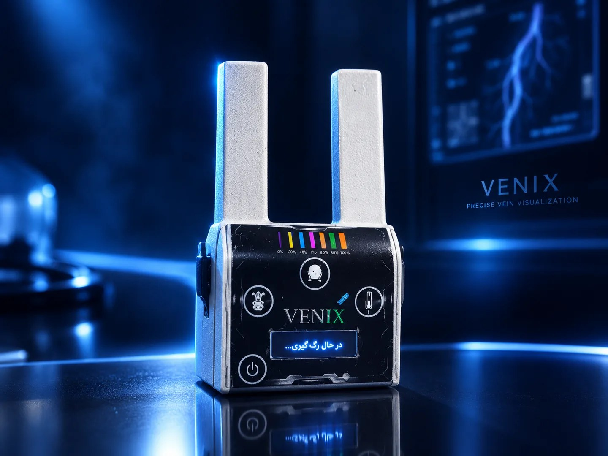
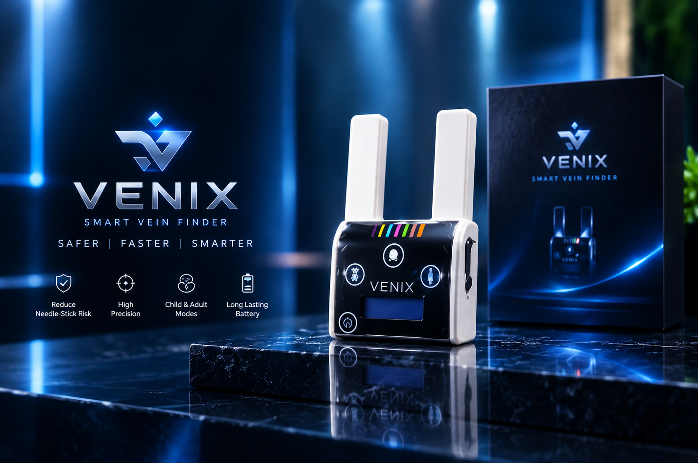

رگیابی نوری تماسی
منبع نور در تماس مستقیم با پوست قرار میگیرد و طراحی نوری با هدف پایداری تابش و کاهش اثر بازتابهای نامطلوب انجام شده است.
VENIX یک رگیاب نوری هوشمند است که رگیابی تماسی، راهنمای مرحلهای، تایمرهای کاری و طراحی ارگونومیک را در یک ساختار یکپارچه کنار هم قرار میدهد.

چهار لایه اصلی VENIX در یک مسیر واحد کار میکنند؛ از مشاهده رگ تا مدیریت زمان و یادآوری مراحل.
منبع نور در تماس مستقیم با پوست قرار میگیرد و طراحی نوری با هدف پایداری تابش و کاهش اثر بازتابهای نامطلوب انجام شده است.
نمایش زمان و پیامهای راهنما برای بخشهای مختلف فرآیند روی نمایشگر، همراه با هشدارهای صوتی.
فیکسکننده رگ در زیر دستگاه برای کنترل با یک دست در کنار کار با آنژیوکت یا نیدل در نظر گرفته شده است.
QR Code تعبیهشده روی دستگاه برای دسترسی به محتوای آموزشی، نکات استفاده و مطالب علمی مرتبط در نظر گرفته شده است.
در دستگاه از LEDهای قدرتمند با طول موج و فرکانس اختصاصی استفاده شده و زاویه و فاصله آنها پس از بررسی و آزمون تنظیم شده است.
ساختار پیامها، تایمر و هشدارها برای کمک به مدیریت مراحل فرآیند و کاهش فراموشی جزئیات طراحی شده است.

ساختار VENIX از ابتدا با نگاه به یک فرآیند واقعی طراحی شده است؛ بنابراین اجزای نوری، نمایشگر، زمانسنجی و کنترل دستگاه در کنار هم یک تجربه یکپارچه ایجاد میکنند.
هر مد منطق زمانی و رفتار مخصوص خود را دارد؛ بدون تکرار اطلاعات، هر کارت فقط بخش منحصربهفرد همان حالت را نشان میدهد.
چرخه کار با ۳۰ ثانیه برای یافتن رگ و ۳۰ ثانیه برای انجام فرآیند ادامه پیدا میکند. پس از پایان، پیامهای مربوط به باز کردن گارو، دفع نیدل و ضدعفونی نمایش داده میشوند.
الگوی زمانی مشابه، با فعال بودن ماژول LED مربوط به حالت کودکان اجرا میشود و در پایان، پیامهای راهنمای پایانی روی نمایشگر ظاهر میشوند.
یک چرخه ۶۰ ثانیهای برای زمانسنجی فعالیتهای موردنیاز کادر درمان؛ همراه با الگوی هشدار صوتی در شروع، ۱۵، ۳۰ و ۶۰ ثانیه.
بستن گارو و انتخاب مد کاری موردنظر.
شروع تایمر و کمک به یافتن رگ مناسب.
ورود به بازه زمانی اختصاصیافته.
نمایش پیامهای پایانی و خاموش شدن ماژول.
ویژگیهای تکمیلی VENIX در کنار سیستم اصلی، تجربه کاربری و نگهداری دستگاه را کاملتر میکنند.
قابلیت طراحیشده در زیر دستگاه برای ثابت نگهداشتن موقعیت رگ و امکان کنترل با یک دست.
نشانگرهای قطر انواع نیدلهای کانولاسیون برای مقایسه بصری با رگ بیمار در حین فرآیند.
ساختار دستگاه با امکان ضدعفونی شدن پس از استفاده در نظر گرفته شده است.
طبق اطلاعات ارائهشده، پوشش خارجی دستگاه دارای ساختار نانویی است.
معرفی محصول، تصاویر، ویژگیها و جزئیات کاربردی VENIX را در صفحه اختصاصی محصول ببینید.